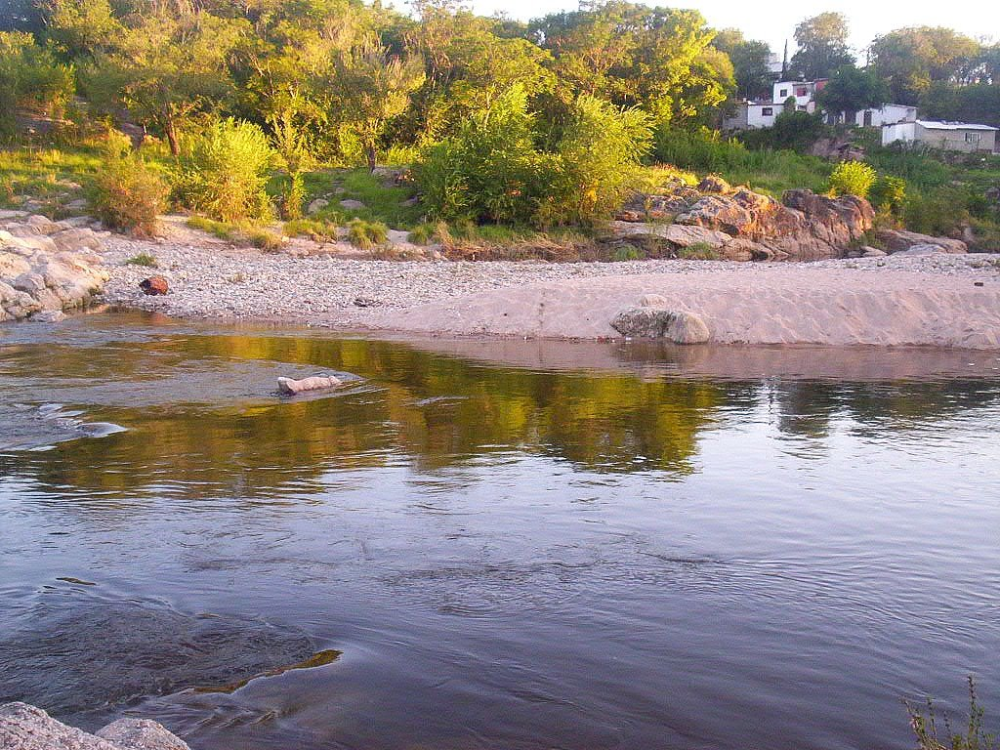
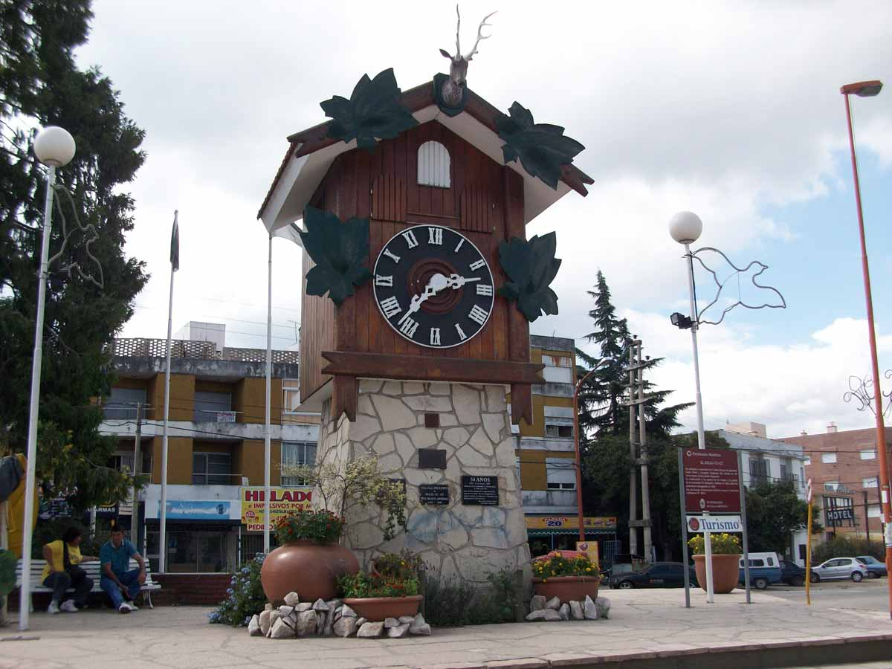
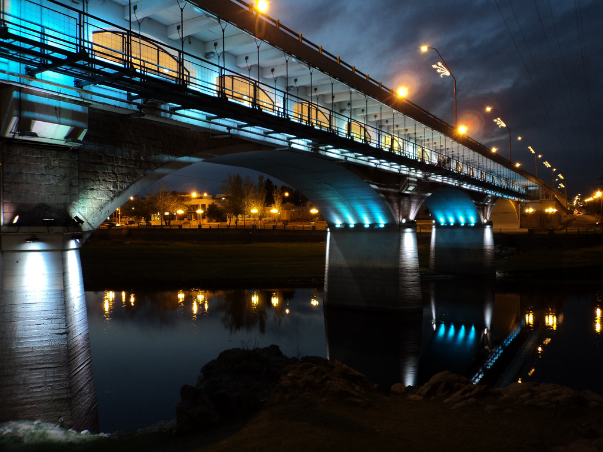
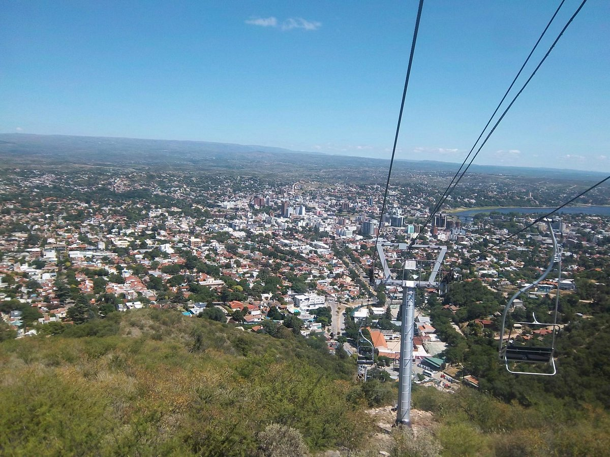

Esta villa turística, situada a solo 30 minutos de la ciudad de Córdoba, es una de las más importantes de la provincia y del país. Elegida por su especial clima serrano, es posible disfrutar de sus paisajes durante todo el año. Destacan, sobre todo en verano, sus balnearios naturales a la vera del río San Antonio y el arroyo Los Chorrillos. El dique San Roque es otro de sus principales atractivos. En él se realizan deportes náuticos, paseos en lancha y en hidropedal, e incluso buceo.
¿COMO LLEGAR?
Por vía terrestre se puede llegar a la ciudad a través de diversas carreteras: Ruta Nacional 20, ya sea desde el sur San Antonio de Arredondo, Mayu Sumaj, Icho Cruz, Cuesta Blanca, Altas Cumbres) o el este (Malagueño y Córdoba capital).
Ruta Nacional 38, desde el norte (Cruz del Eje, Capilla del Monte, La Cumbre, La Falda, Cosquín, Bialet Massé).
Ruta Provincial 28, desde el oeste (Los Gigantes, Tanti).
Ruta Provincial 78, desde el noreste (La Calera).
¿QUE HACER?
Balneario El Fantasio
 Es uno de los más antiguos de Villa Carlos Paz. Está situado sobre las aguas del río San Antonio y posee un vado que genera una cascada de poca altura cuando el río está crecido.
Tuvo su gran apogeo cuando la juventud lo eligió en la década de los años 70. Actualmente es familiar y cuenta con instalaciones sanitarias, parrillas y servicio de guardavidas y sanitarios.
El Reloj Cú Cú
es uno de los emblemas turísticos de la ciudad. Fue construido por un grupo de ingenieros alemanes que vivían en la ciudad. Se inauguró el 25 de mayo de 1958, y en esa época fue uno de los relojes más grandes del mundo.
Está ubicado en la intersección del Boulevard Sarmiento y la avenida Uruguay, a 200 metros del puente-galería Uruguay sobre la ruta 20.
Sobre él se tejieron historias y leyendas urbanas y turísticas, y es un paseo obligado para los visitantes. Integra el patrimonio turístico del denominado centro viejo de la ciudad, junto a la Iglesia Nuestro Sagrado Corazón de Jesús construida en 1980 a su lado por iniciativa del sacerdote dehoniano Carlos Marella.
El templo de estilo post moderno, donde resaltan las líneas rectas y los ángulos, tanto en exterior como en el interior, incluidas sus pinturas y esculturas, suman al sector valores artísticos arquitectónicos y religiosos.
Puente Uruguay
El Puente Uruguay con su galería artística y paseo de artesanías. Está ubicada justo debajo de la cinta asfáltica por donde circulan los vehículos, en uno de los puentes más antiguos de la ciudad. A lo largo del año se organizan distintas actividades culturales como muestras de arte, cuadros, fotografías, feria del libro, artesanías, entre otras.
Complejo Aerosilla
La Aerosilla tiene 1 km. de recorrido, y conduce a una terraza mirador ubicada en un cerro que nos ofrece una magnífica vista de la ciudad y alrededores.
El complejo es dueño de atractivos para conocer, recorrer y transitar en familia y con amigos.
Si decidimos visitar el complejo, podemos utilizar la telesilla, que cuenta con un recorrido de 600 metros y un despegue maximo del piso de unos 15 metros, en un sistema de cable carril. Cebe destacar que mientras ascendemos o descendemos podemos obtener una vista sin igual.
___________________________________________________________________
¿DONDE ALOJARSE?
Eleton Resort & SPA
Eleton Resort & SPA
Virgilio & Constantinopla, X5152KSB Villa Carlos Paz, Córdoba
Tel: 03541 58-4066
★ ★ ★ ★
Reserva YA
Hotel Golden Ross
Hotel Golden Ross
Bernardo Delia 500, X5152 Villa Carlos Paz, Córdoba
Tel: 03541 28-3237
★ ★ ★ ★
Reserva YA
Hotel Altos Del Valle
Hotel Altos Del Valle
Bv. Sarmiento 590, X5152 Villa Carlos Paz, Córdoba
Tel: 03541 48-6347
★ ★ ★
Reserva YA
___________________________________________________________________
¿DONDE COMER?
Ambrogio Restaurante
Ambrogio Restaurante
Bv. Sarmiento 1093, Villa Carlos Paz, Córdoba
Tel: 03541 42-1200
★ ★ ★ ★
+Info
Café del jardín
Café del jardín
Belgrano 128, X5152 Villa Carlos Paz, Córdoba
Tel: 03541 43-2473
★ ★ ★ ★
+Info